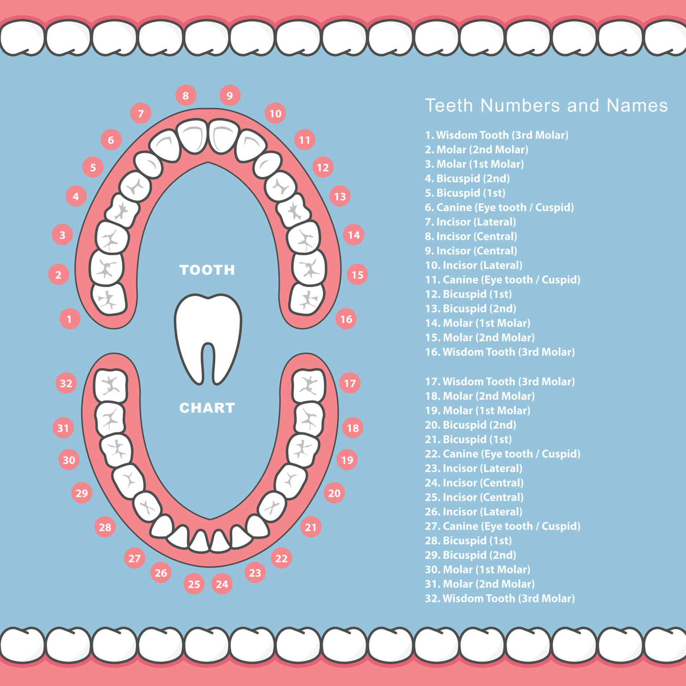

ADULTS

As you’re in the dentist’s chair, in between small talk about your children and what you did over the summer, you
hear mumbling between Dr. Holtzman and Theresa that sounds like a combination of lottery numbers.
What’s that all about? Is this your lucky day, or does it mean you need some dental work?
Well, you can certainly memorize those numbers and try your luck, but it’s definitely about your teeth. In fact,
some dentists frequently refer to teeth by their numbers, even when they’re speaking directly to you.
And, if you have tooth pain, it might be easier to tell the dentist or hygienist the number rather than pointing.
Add it all up, and it would be wise to remember the numbers of your teeth. So let us count ‘em up for you.
Understanding the Tooth Number Chart
While it may sound like a calculus equation as the dentist is examining your mouth, the tooth numbers are rather
simple.
Start at the top right. Tooth number 1 is the one at the back. The one beside it toward the front of your mouth is
2, and the numbering continues along the upper teeth until you get to the other end. So, tooth number 16 is the
farthest back on the top left.